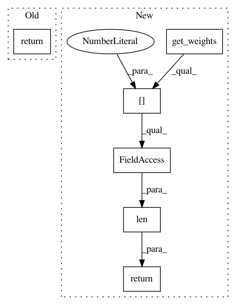

1d52eb75c5fcfb3f9465eb6614b7bb2b57dece4d,autokeras/layer_transformer.py,,deeper_conv_block,#Any#Any#Any#,10
Before Change
np.ones(n_filters, dtype=np.float32)]
bn.set_weights(new_weights)
return [bn,
StubActivation("relu"),
new_conv_layer,
StubDropout(constant.CONV_DROPOUT_RATE)]
def dense_to_deeper_block(dense_layer, weighted=True):
Get deeper layer for dense layer
After Change
if not weighted:
return StubConvBlock(conv_layer.filters, conv_layer.kernel_size)
filter_shape = (kernel_size,) * (len(conv_layer.get_weights()[1][0].shape) - 2)
n_filters = conv_layer.filters
weight = np.zeros(filter_shape + (n_filters, n_filters))
center = tuple(map(lambda x: int((x - 1) / 2), filter_shape))
for i in range(n_filters):
filter_weight = np.zeros(filter_shape + (n_filters,))
index = center + (i,)
filter_weight[index] = 1
weight[..., i] = filter_weight
bias = np.zeros(n_filters)
conv_weights = (add_noise(weight, np.array([0, 1])), add_noise(bias, np.array([0, 1])))
// conv_weights = (weight, bias)
new_conv_layer = StubConvBlock(n_filters, kernel_size=filter_shape)
bn_weights = [np.ones(n_filters, dtype=np.float32),
np.zeros(n_filters, dtype=np.float32),
np.zeros(n_filters, dtype=np.float32),
np.ones(n_filters, dtype=np.float32)]
new_conv_layer.set_weights([bn_weights, conv_weights])
return new_conv_layer
def dense_to_deeper_block(dense_layer, weighted=True):
Get deeper layer for dense layer
In pattern: SUPERPATTERN
Frequency: 3
Non-data size: 6
Instances
Project Name: jhfjhfj1/autokeras
Commit Name: 1d52eb75c5fcfb3f9465eb6614b7bb2b57dece4d
Time: 2018-05-20
Author: jin@tamu.edu
File Name: autokeras/layer_transformer.py
Class Name:
Method Name: deeper_conv_block
Project Name: albermax/innvestigate
Commit Name: a4501a9d2f458a29b2e774e909e01632e59658f9
Time: 2018-01-04
Author: alber.maximilian@gmail.com
File Name: innvestigate/tools/pattern.py
Class Name: BasePattern
Method Name: has_pattern